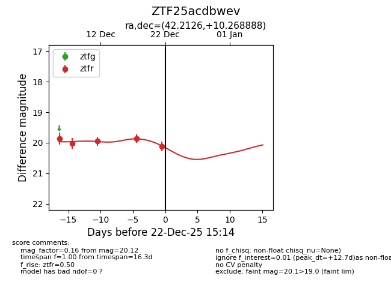
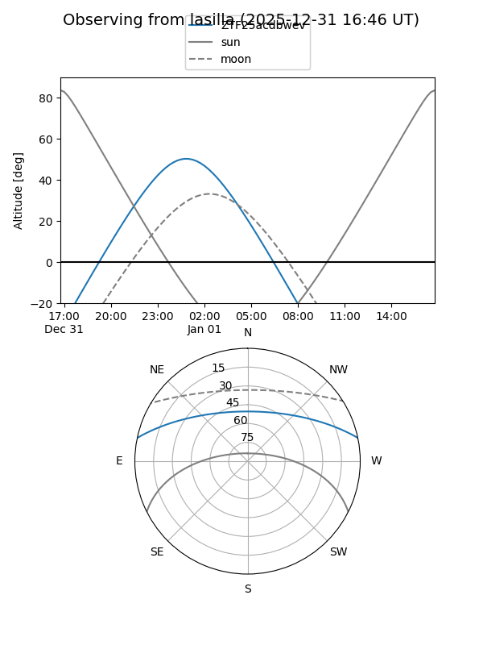
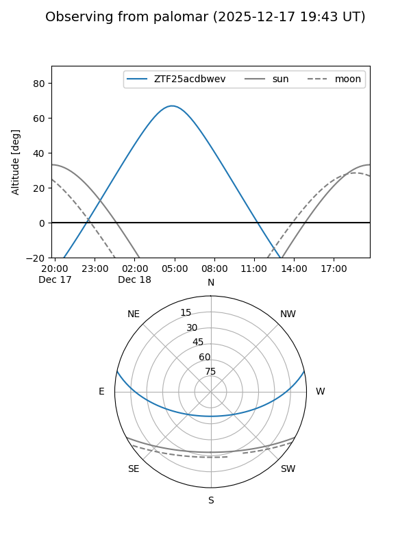

ZTF25acdbwev
Target ZTF25acdbwev at 2025-12-18 11:18
Aliases and brokers:
FINK: fink-portal.org/ZTF25acdbwev
Lasair: lasair-ztf.lsst.ac.uk/objects/ZTF25acdbwev
ALeRCE: alerce.online/object/ZTF25acdbwev
alt names
ZTF25acdbwev (ztf,fink_ztf)
Coordinates:
equatorial (ra, dec) = 42.2126,+10.26889
equatorial (HMS+DMS) = 02:48:51.04,+10:16:08.00
galactic (l, b) = (164.1959,-43.00121)
Photometry
last ztfr=19.87
4 ztfr detections
Lightcurve

Visibility


Additional plots